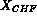
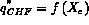
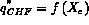
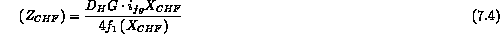

For a given mass flux, fluid physical properties (i.e., pressure for a given fluid), tube diameter and for uniform heat flux, it is found that the data for a range of the tube length and inlet subcooling can be represented approximately by a single curve of critical heat flux against mass quality at the CHF location as sketched in Figure 7.4(a). The initial implication of the relationship between CHF and quality at this location is that the local quality conditions govern the magnitude of the burnout heat flux at that locality; this is termed the "local conditions hypothesis."
The same data can also be plotted in terms of the quality of CHF,  , and "boiling length" at the CHF point,  . The boiling length is defined as the distance from the point in the channel at which bulk saturation (i.e., zero thermodynamic quality) condition are attained. This type of plot is illustrated in Figure 7.4(b). This plot can be regarded as indicating a relationship between the fraction of liquid evaporated at CHF ( ) as a function of the boiling length to burnout, indicating the possibility of some "integral" rather than "local" phenomenon. In fact, it is easy to transform the  relationship into the relationship; the boiling length is given from a one-dimensional energy balance as
. The boiling length is defined as the distance from the point in the channel at which bulk saturation (i.e., zero thermodynamic quality) condition are attained. This type of plot is illustrated in Figure 7.4(b). This plot can be regarded as indicating a relationship between the fraction of liquid evaporated at CHF ( ) as a function of the boiling length to burnout, indicating the possibility of some "integral" rather than "local" phenomenon. In fact, it is easy to transform the  relationship into the relationship; the boiling length is given from a one-dimensional energy balance as
which is equivalent to
where is the hydraulic diameter, G the mass flux, the latent heat of evaporation, the local thermodynamic quality and q" the heat flux. If the critical heat flux is related to the quality of CHF by the expression:
then it follows that:

for the given hydraulic diameter and mass flux, it follows, therefore, that:
The vast majority of correlations for critical heat flux fall into either of these two categories. Although these correlations are equivalent for uniformly heated channels, they give quite different results when the heat flux is nonuniform. The question obviously arises as to which of the two forms is best suited to the prediction of CHF with nonuniform heating, the case which occurs most often in practical applications.
Figure 7.5 shows a comparison between data for uniform heating and a nonuniform axial (cosine distribution) heating where local values of CHF and CHF quality are given by Alekseev (1964). As will be seen later, there is a considerable difference in critical heat flux at a given local quality for the uniform and nonuniform heated tubes respectively. Note that, with the nonuniform heating, CHF could occur first upstream of the end of the channel. Remember that this is only an example of nonuniform heating in the axial direction. One may also have circumferential variation of the flux or variable flux within a rod bundle. These must also be handled based on empirical data.